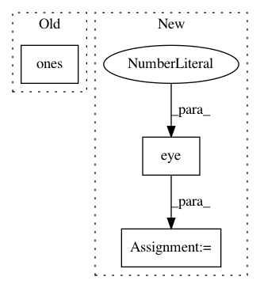

093aca082e2878f3a28defe9075e7334dfceac70,test/distributions/test_distributions.py,TestDistributionShapes,test_one_hot_categorical_shape,#TestDistributionShapes#,3181
Before Change
simplex_sample = self.tensor_sample_2 / self.tensor_sample_2.sum(-1, keepdim=True)
self.assertEqual(dist.log_prob(simplex_sample).size(), torch.Size((3, 2,)))
self.assertEqual(dist.log_prob(dist.enumerate_support()).size(), torch.Size((3,)))
simplex_sample = torch.ones(3, 3) / 3
self.assertEqual(dist.log_prob(simplex_sample).size(), torch.Size((3,)))
// batched
dist = OneHotCategorical(torch.tensor([[0.6, 0.3], [0.6, 0.3], [0.6, 0.3]]))
After Change
sample = torch.tensor([0., 1., 0.]).expand(3, 2, 3)
self.assertEqual(dist.log_prob(sample).size(), torch.Size((3, 2,)))
self.assertEqual(dist.log_prob(dist.enumerate_support()).size(), torch.Size((3,)))
sample = torch.eye(3)
self.assertEqual(dist.log_prob(sample).size(), torch.Size((3,)))
// batched
dist = OneHotCategorical(torch.tensor([[0.6, 0.3], [0.6, 0.3], [0.6, 0.3]]))
self.assertEqual(dist._batch_shape, torch.Size((3,)))
In pattern: SUPERPATTERN
Frequency: 3
Non-data size: 3
Instances
Project Name: pytorch/pytorch
Commit Name: 093aca082e2878f3a28defe9075e7334dfceac70
Time: 2021-01-05
Author: fritz.obermeyer@gmail.com
File Name: test/distributions/test_distributions.py
Class Name: TestDistributionShapes
Method Name: test_one_hot_categorical_shape
Project Name: nilearn/nilearn
Commit Name: e706526aef384392be0395e7c69e3795289ada11
Time: 2015-07-28
Author: elvis.dohmatob@inria.fr
File Name: nilearn/decoding/tests/test_same_api.py
Class Name:
Method Name: test_smoothlasso_and_tvl1_same_for_pure_l1
Project Name: nilearn/nilearn
Commit Name: 56f63c1ee1e1bf5d06550373b39caa085fdc9f12
Time: 2015-07-28
Author: elvis.dohmatob@inria.fr
File Name: nilearn/decoding/tests/test_same_api.py
Class Name:
Method Name: test_smoothlasso_and_tvl1_same_for_pure_l1